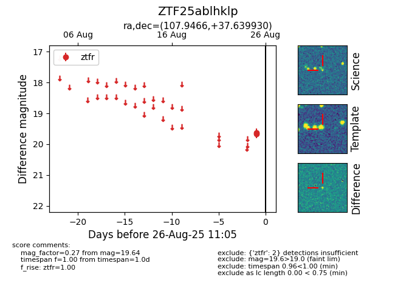

Target ZTF25ablhklp at 2025-08-26 11:05, see:
FINK: fink-portal.org/ZTF25ablhklp
Lasair: lasair-ztf.lsst.ac.uk/objects/ZTF25ablhklp
ALeRCE: alerce.online/object/ZTF25ablhklp
alt names
ZTF25ablhklp (ztf,fink)
coordinates:
equatorial (ra, dec) = (107.9466,+37.63993)
galactic (l, b) = (179.9688,+19.93526)
photometry
last ztfr=19.64
2 ztfr detections
